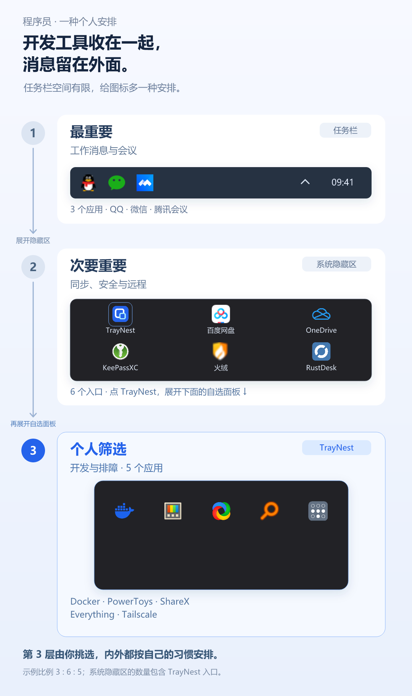
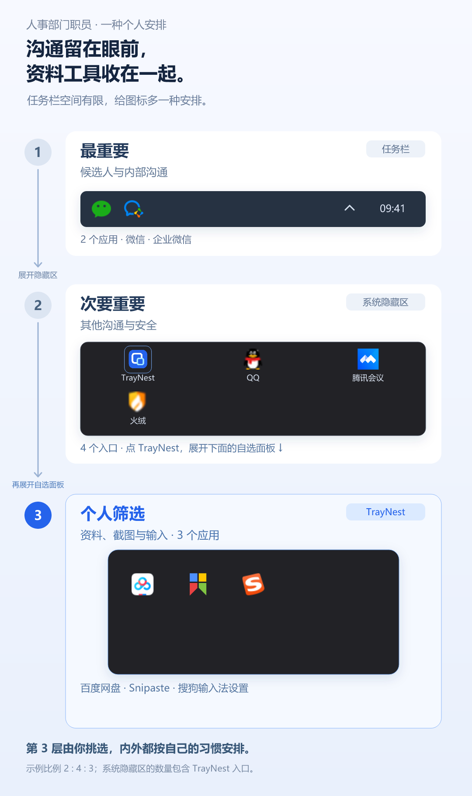
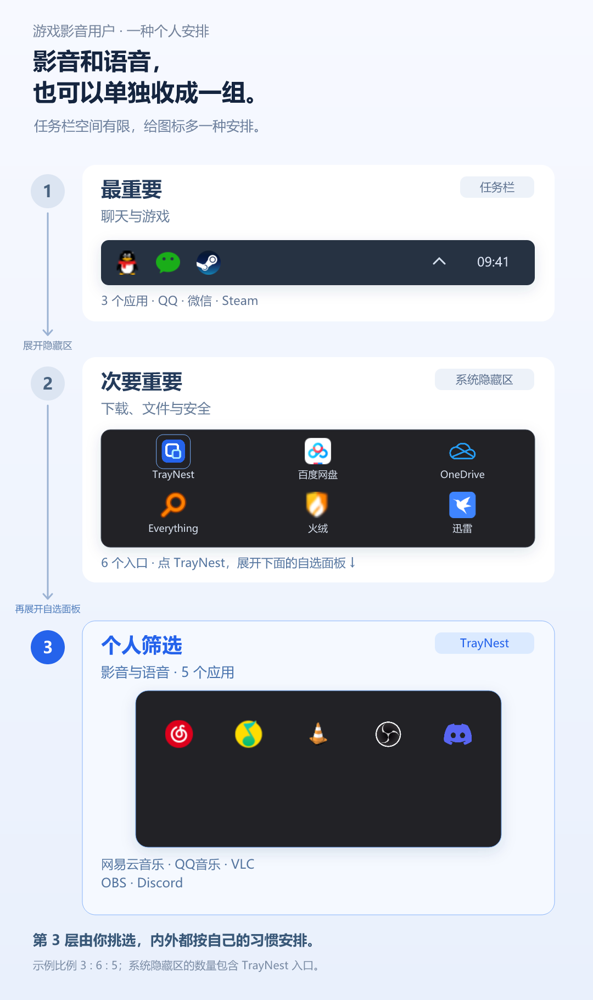

<!doctype html><meta charset="utf-8"><meta name="viewport" content="width=device-width,initial-scale=1"><title>典型用户收纳案例 · 竖版</title><style>body{background:#e8eef8;margin:0;padding:24px;font:16px system-ui;color:#243550}main{max-width:800px;margin:auto}img{display:block;width:100%;height:auto;margin:15px 0 48px;border-radius:15px}a{color:#2563eb}</style><main><h1>三个案例，三级安排</h1><p>从上往下：任务栏 → 系统隐藏区 → TrayNest 自选面板。本地预览。</p><h2>程序员</h2><a href="developer.svg">可编辑SVG</a><h2>人事部门职员</h2><a href="hr.svg">可编辑SVG</a><h2>游戏影音用户</h2><a href="gamer.svg">可编辑SVG</a></main>